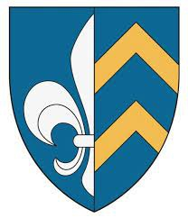

Antavla
2791425 Sigrid Haakonsdatter Bolt
Blev ca 82 år.

Far:
Håkon Ogmundsson Bolt (1260 - 1346)
Mor:
Elin Lauritzdatter (1260 - 1292)
Född:
omkring 1281 Ringerike, Norge.
[1]
Död:
omkring 1363 Egge, Steinkjer, Norge.
[1]
Barn med
2791424 Hallstein Torleivsson (1272? - 1345?)
Barn:
Nikolas Karlsson Skancke (1300? - 1355?)
Personhistoria
Årtal
Ålder
Händelse
1281?
Födelse omkring 1281 Ringerike, Norge
[1]
1292
Modern
5582851 Elin Lauritzdatter
dör 1292 Ringerike, Buskerud, Norge
[2]
1300?
Sonen
1395712 Nikolas Karlsson Skancke
föds omkring 1300 Egge, Steinkjer, Norge
[3]
1325?
Barnbarnet
697856 Peder Nilsson Skancke
föds omkring 1325 Mjälle, Frösö (Z)
[3]
1345?
Partnern
2791424 Hallstein Torleivsson
dör omkring 1345 Egge, Steinkjer, Norge
[1]
1346
Fadern
5582850 Håkon Ogmundsson Bolt
dör 1346 Hamar, Hedmark, Norge
[3]
1355?
Sonen
1395712 Nikolas Karlsson Skancke
dör omkring 1355 Våle, Hackås (Z)
[3]
1360
Barnbarnet
697856 Peder Nilsson Skancke
dör 1360 Hov, Hackås (Z)
[3]
1363?
Död omkring 1363 Egge, Steinkjer, Norge
[1]
Källor
[1]
Remi Trygve Pedersen
[2]
Henning Jensen
[3]
Jahn Edgar Michelsen